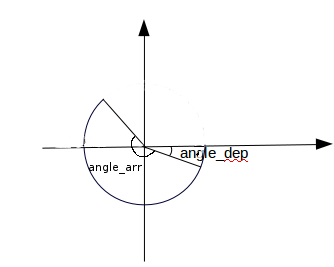

Il est possible de redimensionner la fenêtre à l'aide de la fonction "size". Cette fonction prend 2 paramètres : la largeur de la fenêtre et la longueur de la fenêtre (en pixel dans les 2 cas).
Saisissez et testez ce code
size(400,300)
La fonction "background" permet de modifier la couleur de fond de la fenêtre. Cette fonction prend 3 paramètres : le canal rouge, le canal vert et le canal bleu.
Saisissez et testez ce code
size(400,300)
background(0,255,0)
N.B. Quand les 3 canaux rouge, vert et bleu sont égaux, il possible de faire passer un seul paramètre à la fonction "background".
background(200)
est équivalent à
background(200,200,200)
Écrire un programme qui permet d'avoir une fenêtre de dimension 800 par 600 avec un fond d'écran de couleur noire.
La fonction "line" permet de dessiner une ligne. Cette fonction prend 4 paramètres :
line(x1,y1,x2,y2)
avec :
Saisissez et testez ce code
size(400,400)
background(255)
line(200,0,200,400)
Codez un programme permettant d'obtenir ceci :
N.B. La fenêtre a pour dimension 200 par 200
Codez un programme permettant d'obtenir ceci :
N.B. La fenêtre a pour dimension 200 par 200
La fonction "ellipse" permet de dessiner des... ellipses. La fonction "ellipse" prend 4 paramètres.
ellipse(x,y,a,b)
avec :
(x,y) les coordonnées du centre de l'ellipse, a la "largeur horizontale" et b la "largeur verticale".
Saisissez et testez ce code
size(400,400)
ellipse(200,200,100,50)
Codez un programme permettant d'obtenir un cercle au centre de la fenêtre.
La fonction "triangle", permet d'obtenir un... triangle. Cette fonction prend 6 paramètres :
triangle(x1,y1,x2,y2,x3,y3)
avec :
(x1,y1) les coordonnées du point 1, (x2,y2) les coordonnées du point 2 et (x3,y3) les coordonnées du point 3.
Saisissez et testez ce code
size(400,400)
triangle(100,100,150,200,220,150)
Codez un programme permettant d'afficher un triangle rectangle. La position et la taille du triangle devront être aléatoires.
Pour afficher un quadrilatère, il faut utiliser la fonction "quad". Cette fonction prend 8 paramètres.
quad(x1,y1,x2,y2,x3,y3,x4,y4)
Ces 8 paramètres sont les coordonnées des 4 points.
Saisissez et testez ce code
size(400,400)
quad(100,100,150,200,220,230,300,120)
La fonction "rect" permet de tracer des rectangles. Cette fonction prend 4 paramètres :
rect(x,y,a,b)
(x,y) les coordonnées du coin supérieur-gauche, a la "largeur horizontale" et b la "largeur verticale".
Saisissez et testez ce code
size(400,400)
rect(200,200,100,60)
Codez un programme permettant d'afficher un carré de taille aléatoire. Le centre du carré devra se trouver au centre de la fenêtre
La fonction "arc" permet de dessiner un "morceau d'ellipse". La fonction arc prend 6 paramètres.
arc(x,y,a,b,angle_dep,angle_arr)
les 4 premiers paramètres sont les mêmes que pour la fonction "ellipse".
angle_dep correspond à "l'angle de départ" et angle_arr correspond à l'angle d'arrivée.
Attention, les angles doivent être donnés en radian, si vous désirez exprimer vos angles en degrés, il faudra utiliser la fonction "radians" :
angle_radian=radians(angle_degré)
Pour les angles, il faut considérer le sens horaire (et pas le sens anti-horaire comme le sens trigonométrique).
Saisissez et testez ce code
size(400,400)
arc(200,200,100,50,radians(45),radians(270))
Codez un programme permettant d'afficher ceci :
Nous allons maintenant colorier nos dessins.
Pour chaque figure dessinée, il y a 2 choses à considérer :
Le contour sera géré par la fonction "stroke", le "remplissage" sera géré par la fonction "fill".
Ces 2 fonctions prennent en paramètre les 3 canaux rouge, vert, bleu.
Saisissez et testez ce code
size(400,400)
background(255)
stroke(255,0,0)
fill(0,0,0)
ellipse(200,200,50,50)
Vous pouvez vérifier que le contour du cercle est rouge et que "l'intérieur" du cercle est noir.
Comme vu précédemment, si les 3 canaux R,V,B sont identiques, il est possible de mettre un seul paramètre (mettre fill(0) à la place de fill(0,0,0).
La fonction "noStroke" permet de supprimer le contour, la fonction "noFill" permet de rendre l'intérieur d'une figure incolore (comme si on ne coloriait pas l'intérieur de la figure).
Saisissez et testez ce code
size(400,400)
background(255)
stroke(255,0,0)
noFill()
ellipse(200,200,50,50)
noStroke()
fill(0)
rect(30,30,30,30)
Il est possible de jouer sur l'épaisseur du contour avec la fonction "strokeWeight" qui prend en paramètre l'épaisseur du trait en pixel.
Saisissez et testez ce code
size(400,400)
background(255)
strokeWeight(5)
stroke(255,0,0)
fill(0,0,0)
ellipse(200,200,50,50)
Afin, il est possible de modifier la transparence d'une figure en ajoutant un 4e paramètre à la fonction "fill". Plus ce paramètre sera grand et plus la figure sera opaque.
Saisissez et testez ce code
size(400,400)
background(255)
noStroke()
fill(0,255,0)
rect(200,200,50,50)
fill(255,0,0,200)
ellipse(200,200,50,50)
Créez un programme permettant d'afficher 100 disques à l'écran. La taille de chaque disque devra être aléatoire (mais comprise entre 20 et 50). La couleur et la transparence de chaque disque devront aussi être aléatoires.
Avec Processing, il est très simple d'avoir un nombre aléatoire :
random(a,b)
permet d'avoir un nombre aléatoire compris entre a et b.